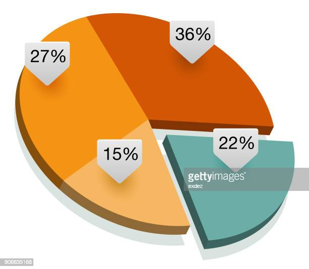

A minimalistic Feedback site

The aim of our application is to solve the societal problems being faced by citizens, which facilitates them to lead a decent and hassle-free life. Our application takes feedback from citizens in objective, subjective or verbal manner. The application aims to analyse the sentiments of citizens in order to identify the major problem being faced. It makes use of various data visualization tools like wordclouds, pie charts and bar graphs, to represent the results. The wordcloud depicts the major problem being faced by citizens and these results are sent to the ward commissioner and finally to the city mayor, to address and solve the problem immediately
What are Word Clouds?

Word clouds (also known as text clouds or tag clouds) work in a simple way: the more a specific word appears in a source of textual data (such as a speech, blog post, or database), the bigger and bolder it appears in the word cloud.
What Is a Bar Graph?
A bar graph represents data using a series of bars across two axes. The x-axis (the horizontal) classifies the data by group, with one bar for each group. So for example, if you were displaying the number of beads of each color in a jar, the x-axis would have a section for each color, and each color would have its own bar. The y-axis (the vertical) shows the value for the category for each bar.
What Is a Pie Chart?
Pie charts are circular graphs that display percentages of a whole as if they were slices of a pie. This is very similar to bar graphs in that the individual slices of pie mean that the data has to have the potential to be categorized.